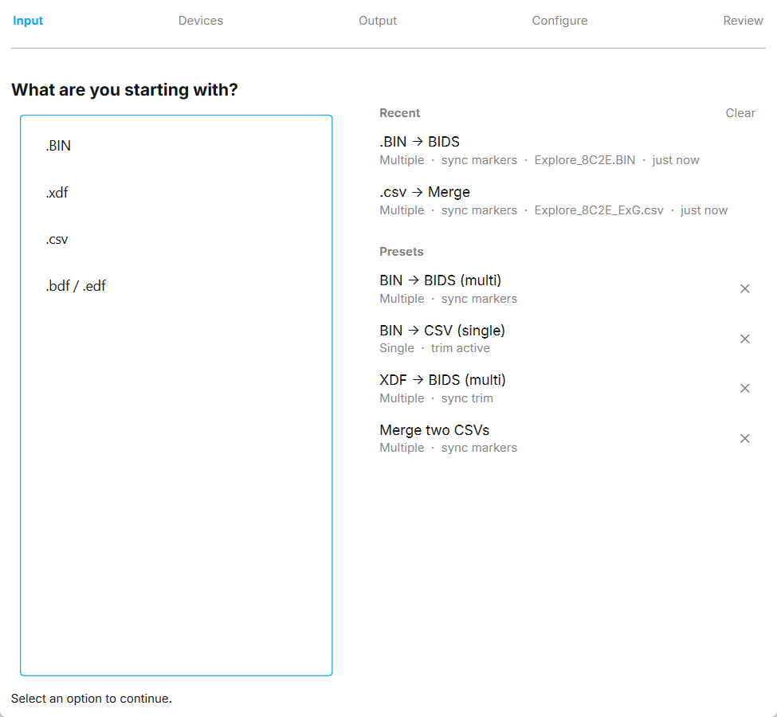
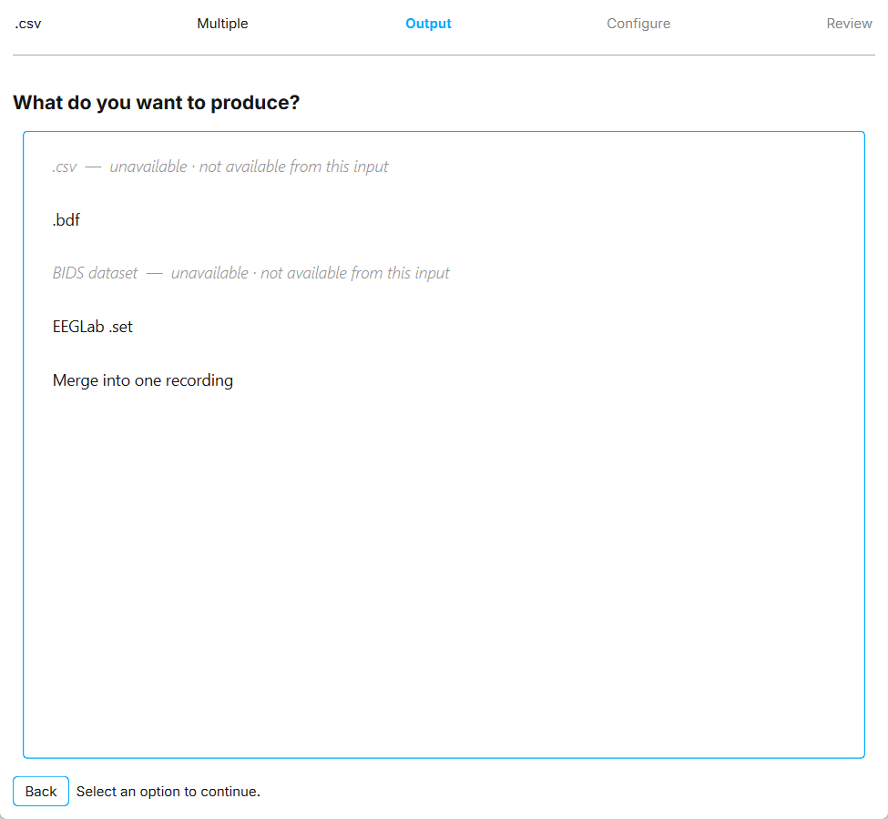
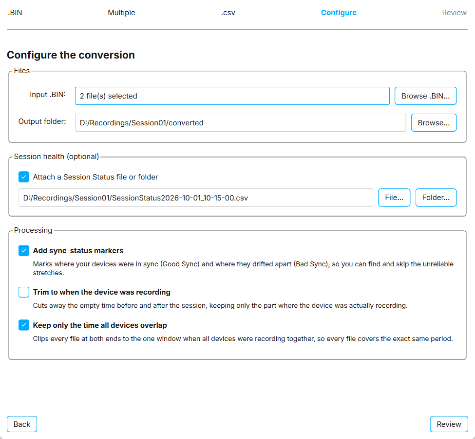
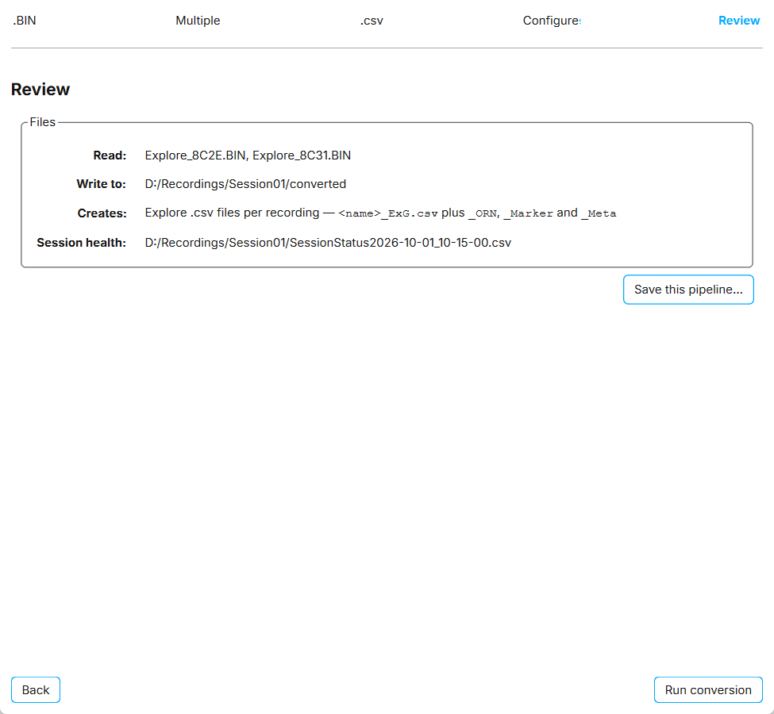
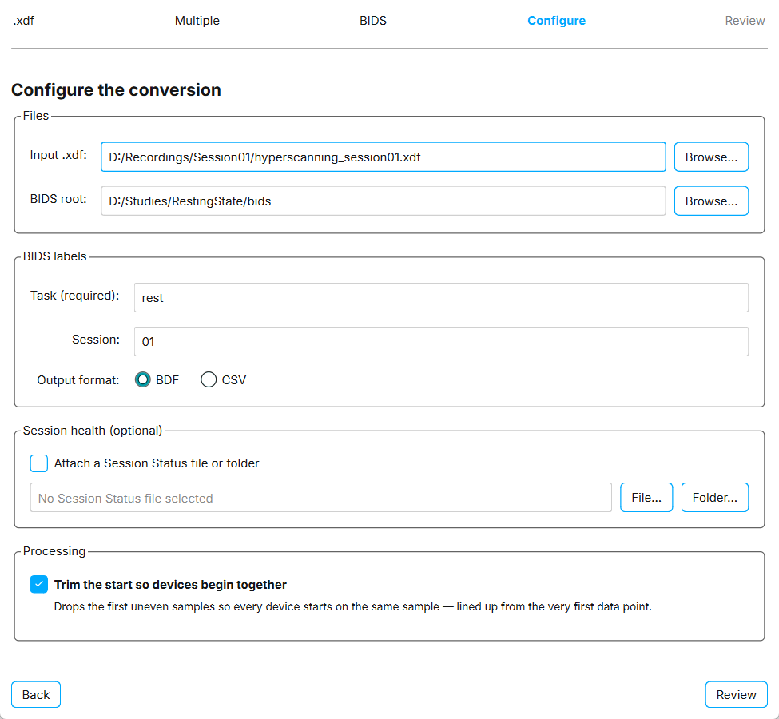
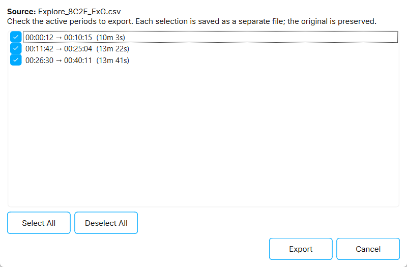

Converting recordings with the Convert / Process wizard
The Convert / Process wizard converts recordings between formats without loading them into the file list. Use it to:
-
Convert binary
.BINfiles from the Explore device memory to.csv,.bdf, or a BIDS dataset. -
Convert
.xdffiles recorded through LSL to a BIDS dataset. -
Convert Explore
.csvrecordings to.bdf. -
Convert a folder of recordings to EEGLAB datasets.
-
Merge recordings from two synchronized devices into one recording.
To open the wizard, navigate to:
File > Convert / Process…

How the wizard works
The wizard has five steps. A bar at the top shows the steps and the choices you have made so far.
-
Input. Choose what you are starting with:
.BIN,.xdf,.csv, or.bdf / .edf. -
Devices. Choose
Single deviceorMultiple devices. -
Output. Choose what you want to produce. Outputs that are not possible from your input are greyed out, and the reason is shown next to them.
-
Configure. Select the input files and output folder, and set any options for the conversion.
-
Review. Check which files will be read, where the output will be written, and which files will be created. Then click Run conversion, or Run merge when merging.
Click Back at any time to change an earlier choice. If something is missing or invalid when you continue, the wizard tells you what to fix.

Available conversions
| Input | Output | Notes |
|---|---|---|
|
|
Creates |
|
|
Creates |
|
BIDS dataset |
Creates a BIDS dataset with one subject per device. |
|
BIDS dataset |
Creates a BIDS dataset with one subject per Explore device in the file, in BDF or CSV format. |
|
|
Converts Explore |
|
EEGLAB |
Converts every recording in a folder to an EEGLAB dataset. |
Two |
Merged recording |
Combines two synchronized devices into one recording. Requires |
Converting from BIN
You can convert binary files from the Explore device internal memory, in .BIN format, to .csv, .bdf, or a BIDS dataset.
To convert .BIN files:
-
Open the wizard and select
.BIN. -
Select
Single deviceto convert one file, orMultiple devicesto convert several files at once. -
Select
.csv,.bdf, orBIDS dataset. -
Click Browse .BIN… and select the file or files. With
Multiple devices, select at least two files. -
Click Browse… next to
Output folderand choose where the converted files are written. -
For a BIDS dataset, enter the BIDS labels. See BIDS labels.
-
Optional: attach a Session Status file and choose processing options. See Using a Session Status file.
-
Click Review, check the summary, and click Run conversion.
The output files are named after the .BIN file, with Explore_ added in front if the name does not already start with it.
When converting to .bdf, the data is written in BDF+ format using 24-bit resolution, as opposed to EDF or EDF+.
If you changed the device sampling rate or channel mask during the recording, a new ExG file is created at each change. The file name includes the time at which the setting changed.


Converting from XDF to BIDS
If you recorded one or more Explore devices into a single .xdf file through LSL, you can convert it to a BIDS dataset.
To convert an .xdf file:
-
Open the wizard and select
.xdf. -
Select
Single deviceorMultiple devices, depending on how many Explore devices are in the file. -
Select
BIDS dataset. -
Click Browse… next to
Input .xdfand select the file. -
Click Browse… next to
BIDS rootand choose the root folder of the dataset. -
Enter the BIDS labels and choose the
Output format:-
BDFwrites a standard BIDS dataset undersub-/ses-/eeg/. -
CSVwrites per-device Explore.csvfiles and anevents.tsvfile undersub-/ses-/derivatives/csv/. This layout is not validated against the BIDS standard.
-
-
Optional: attach a Session Status file and choose processing options. See Using a Session Status file.
-
Click Review, then Run conversion.
A progress window shows a live log of the conversion. To stop, click Cancel. The recording that is being written is finished first and the remaining ones are skipped. If you close Explore Signals during a conversion, you are asked to confirm.
Datasets in either format can be loaded back into Explore Signals with File > Import BIDS.

BIDS labels
When the output is a BIDS dataset, the wizard asks for:
| Field | Description |
|---|---|
|
Required. Describes what was recorded, for example |
|
Optional, for example |
Both labels may contain only letters and digits, without spaces or symbols.
Each device becomes one BIDS subject, labelled with its device ID. For example, a device with the ID 84D1 is written to sub-84D1.
Converting CSV to BDF
To convert Explore .csv recordings to .bdf:
-
Open the wizard and select
.csv. -
Select
Single devicefor one recording, orMultiple devicesto convert several at once. -
Select
.bdf. -
Click Browse .csv… and select the
_ExG.csvfile or files. -
Click Browse… next to
Output folder. -
Click Review, then Run conversion.
Each recording is written as <name>_ExG.bdf, with its markers included. If files with the same name already exist in the output folder, you are asked before they are replaced.
Requirements:
-
Only Explore
_ExG.csvfiles can be converted. -
Each
_ExG.csvfile needs its matching_Meta.csvfile in the same folder. -
Two selected files must not have the same name.
Values in the .bdf file can differ from the .csv file by less than 0.1 µV. Because .bdf stores data in whole seconds, a final partial second at the end of the recording is dropped.
|
Converting to EEGLAB datasets
Recordings in .csv, .bdf, or .edf format can be converted to .set files for EEGLAB in MATLAB.
To convert recordings to EEGLAB datasets:
-
Open the wizard and select
.csvor.bdf / .edf. -
Select
Single deviceorMultiple devices. -
Select
EEGLab .set. -
Click Browse folder… and select the folder containing the recordings. Every supported recording in the folder is converted.
-
Click Review, then Run conversion.
The .set files are created in a new subfolder named datasets inside the selected folder.
To convert recordings from .csv format, the respective _Meta.csv file must be in the same folder.
Merging recordings
To merge two recordings from Hypersync-synchronized devices, select .csv or .xdf, then Multiple devices, then Merge into one recording.
For the full workflow, requirements, and troubleshooting, see Merging two 32-channel devices into a 64-channel recording.
Using a Session Status file
Mentalab Hypersync writes a Session Status file during a session. It records when each device was recording and whether it was synchronized. Session Status files are named SessionStatus<date>_<time>.csv or session_status_<date>_<time>.csv.
When you convert .BIN files, convert an .xdf file to BIDS, or merge recordings, you can attach a Session Status file to process the output.
To attach a Session Status file:
-
In the
Session health (optional)section, selectAttach a Session Status file or folder. -
Click File… to select the Session Status file directly, or Folder… to select the folder that contains it.
-
In the
Processingsection, select the options you want.
The options in the Processing section depend on the conversion. Options that need a Session Status file stay disabled until one is attached.
| Option | Available for | Effect |
|---|---|---|
|
|
Adds a marker at each point where a device’s sync status changed. |
|
|
Cuts away the time before and after the session, keeping only the periods when the device was recording. See Exporting crops. |
|
|
Crops every file to the window in which all devices were recording, so every file covers exactly the same period. |
|
|
Drops the first samples of each device so that all devices start on the same sample. This option does not need a Session Status file. |
When converting an .xdf file to BIDS with a Session Status file attached, sync events are also written to each subject’s events.tsv file.
Exporting crops
If you select Trim to when the device was recording or Keep only the time all devices overlap, the Export Crop(s) window opens after the conversion. It lists the active recording periods found in the Session Status file.
-
Check the periods you want to export. Use Select All or Deselect All to change all of them.
-
Click Export.
Each selected period is saved as a separate file with crop and a number added to its name, for example Explore<name>_ExG_crop1.csv. Matching _ORN and _Marker files are cropped as well. The full converted file is kept.
With Keep only the time all devices overlap, the same periods are applied to the files of all devices.

Presets and recent runs
The first page of the wizard has a panel with your recent runs and presets. Click an entry to skip directly to the Configure step with the same choices and options. You only need to select the files again.
- Recent
-
The last three conversions you ran. Click Clear to empty the list.
- Presets
-
Saved conversion settings. Four presets are included:
-
BIN → BIDS (multi)— with sync-status markers -
BIN → CSV (single)— trimmed to when the device was recording -
XDF → BIDS (multi)— BDF output, with the start trimmed so devices begin together -
Merge two CSVs— with sync-status markers
-
To save your own preset, click Save this pipeline… on the Review page and enter a name. Your presets are marked with ★.
A preset stores the input, output, number of devices, options, and labels. It does not store file or folder paths.
To delete a preset, click the ✕ next to it, or right-click it and select Delete preset. To bring back deleted built-in presets, click Restore defaults.
For more information or support, contact support@mentalab.com.